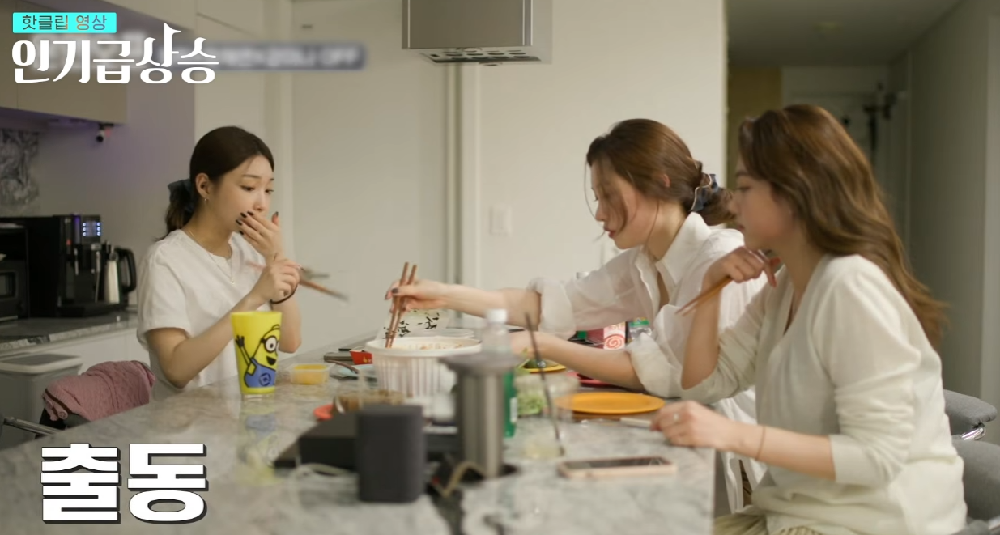
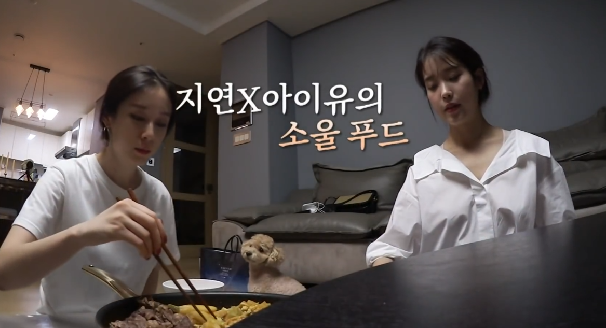

엔믹스 설윤은 세상이 멸망한다면 X떡을 무조건 먹을거고 수시로 말하고 다님

청하, 정채연, 강미나도 같은 브랜드를 즐겨 먹는 모습
여자친구 은하도 마찬가지

떡볶이를 좋아해 직접 만들어 먹는 센세와 지연
"난 정제탄수화물이란 걸 알고도 사랑했어요... 너희도 그럴 수 있을까?"
엔믹스 설윤은 세상이 멸망한다면 X떡을 무조건 먹을거고 수시로 말하고 다님

청하, 정채연, 강미나도 같은 브랜드를 즐겨 먹는 모습
여자친구 은하도 마찬가지

떡볶이를 좋아해 직접 만들어 먹는 센세와 지연
"난 정제탄수화물이란 걸 알고도 사랑했어요... 너희도 그럴 수 있을까?"
피자, 엽떡 탄수+나트륨
프레스 데이 전날 먹으면 잘 밀리는 음식
아이브?
이번 영상 보고 "내가 건강하게 살려면 죽어도 엽떡만은 먹지 말아야겠다" 생각함